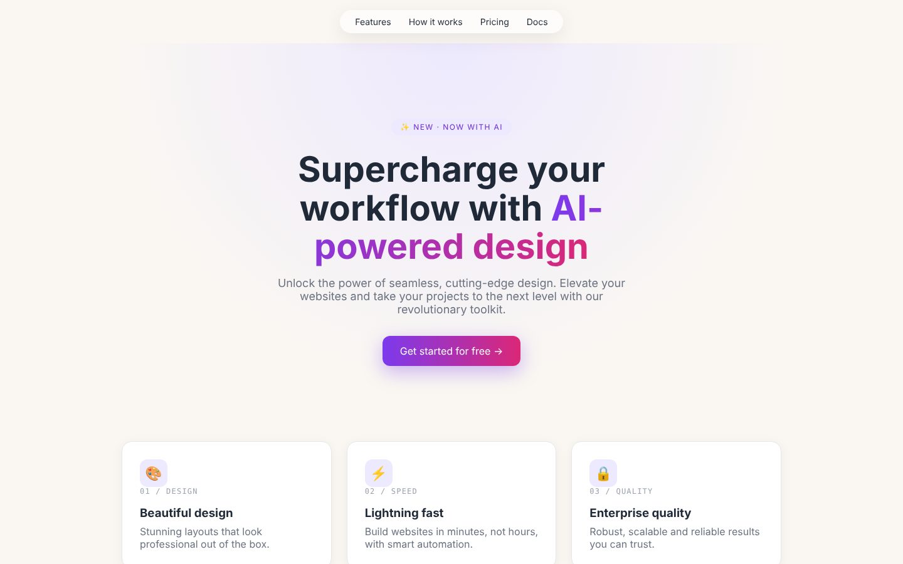
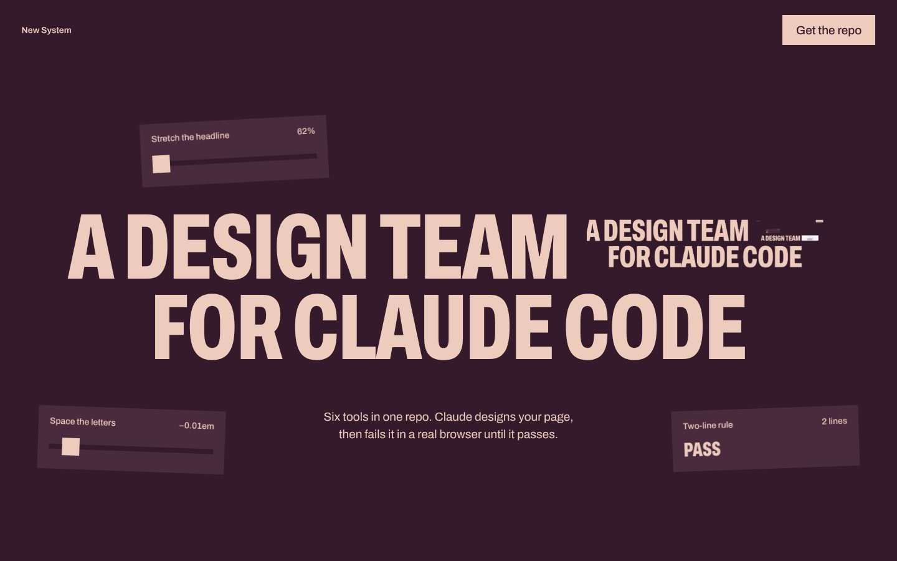

Six tools in one repo. Claude designs your page, then fails it in a real browser until it passes.
Two-line rulePass
Built on open work:
Emil Kowalski’s motion rules, Paul Bakaus’s Impeccable, Leonxlnx’s Taste, Figma’s MCP server, Microsoft’s Playwright and Vercel Labs’ Find Skills, wired to work as one.
One owner per stage
Taste sets the direction
It deals three of 20 directions drawn from a study of 247 curated sites, and Claude picks one. Then its gate, a script that opens the page in a real browser at 1440, 768 and 390 pixels, fails it on every generated habit it measures.

19 failThis page’s brief, built the stock way.

0 failThis page, through the same gate.
Impeccable runs the critique
24 commands give Claude a design vocabulary: critique, audit, polish, bolder, typeset. Two isolated reviewers, a design director and a detector in a real browser, scored this page and named five problems. This version is the fix.
/impeccable critique site/index.html
Its first critique of this page
Visibility of system status
3
Consistency and standards
2
Recognition rather than recall
2
Aesthetic and minimalist design
2
Error recovery
3
22/36P1 · The middle rows are a template.
Five of the nine scored heuristics, and the issue that rebuilt this section.
Emil’s rules set the motion
16 skills from Emil Kowalski’s years at Vercel and Linear. Ease-out for anything that enters, under 300ms for interface motion, nothing that grows from zero, and a press state on every button. His review of this page’s motion read like this.
His review table, applied here
Before
After
Why
Chips and lead fade as one block
Each part rises, 70ms apart
A stagger reads as order
Hidden states set by an inline script
Set by the script that reveals them
Nothing stays hidden if it fails
Copy gives no feedback
Copied, through a 2px blur
Blur bridges a state swap
Hover on every pointer
(hover: hover) and (pointer: fine)
Taps leave hover stuck
Four of nine rows from the review of this page.
Figma hands over the design
Paste a link to a frame. Claude reads its structure, variables and screenshot before writing a line, uses the assets Figma serves instead of placeholders, and matches the frame one to one.
get_design_contextget_metadatawhen the frame is too largeget_screenshotget_variable_defsimplement, then compare
The order Figma’s own guide requires, written into the project’s rules.
Playwright clicks through it
A real browser opens the page, drags the controls, opens every question, types a brief and presses Copy, then reads the console. In a cloud session it switches to the container’s own Chromium.
Playwright MCP’s own recording of its check of this page.
Find Skills fetches the rest
Tell it what you are working on. It searches the skills directory, shows each match with its install count and author, and installs the one you approve into the project, where the lockfile records it.
skills-lock.json
"find-skills" vercel-labs/skills
"design-taste-frontend" Leonxlnx/taste-skill
"emil-design-eng" emilkowalski/skills
"animate" emilkowalski/skills
…and 14 more, each with a content hash
The project’s real lockfile: where every skill came from.
How this page was built
Eight minutesFirst, Taste dealt three directions and Claude chose one.
Three minutesThen Claude wrote the page.
Seventeen minutesNext, the gate, Emil’s motion rules and Impeccable’s critique.
Twelve minutesLast, the fixes, and Playwright clicking through.
Before you clone it
What do I need installed?
Claude Code, Node 22 or newer, and Chrome, Edge or Chromium for the browser checks. Git to clone the repo. Nothing else installs itself.
How long does one build take?
Taste’s own estimate is 30 to 45 minutes and a few hundred thousand tokens for a page. This one took about 40, including a full Impeccable critique and a round of fixes; the bar above is its real record.
Do I need a Figma account?
Only when you hand Claude a Figma frame. The remote server needs a Dev or Full seat on a paid plan; Starter, View and Collab seats get six tool calls a month.
Does it work in Claude Code on the web?
Yes. Playwright and the gate run on the container’s own Chromium. Figma, the open photo archives and skills.sh work once their hosts are allowed in the environment’s network settings.
Does anything run on its own?
Only what you ask for. Impeccable’s design hook stays off until you run /impeccable hooks on, and three of Emil’s skills run only when you call them by name.
How do I keep it current?
npx skills update -p refreshes Emil’s skills, Taste and Find Skills from the lockfile. npx impeccable update refreshes Impeccable.
First, clone it and start Claude Code inside it:
git clone https://github.com/raycoding1-collab/New-system- && cd New-system- && claude